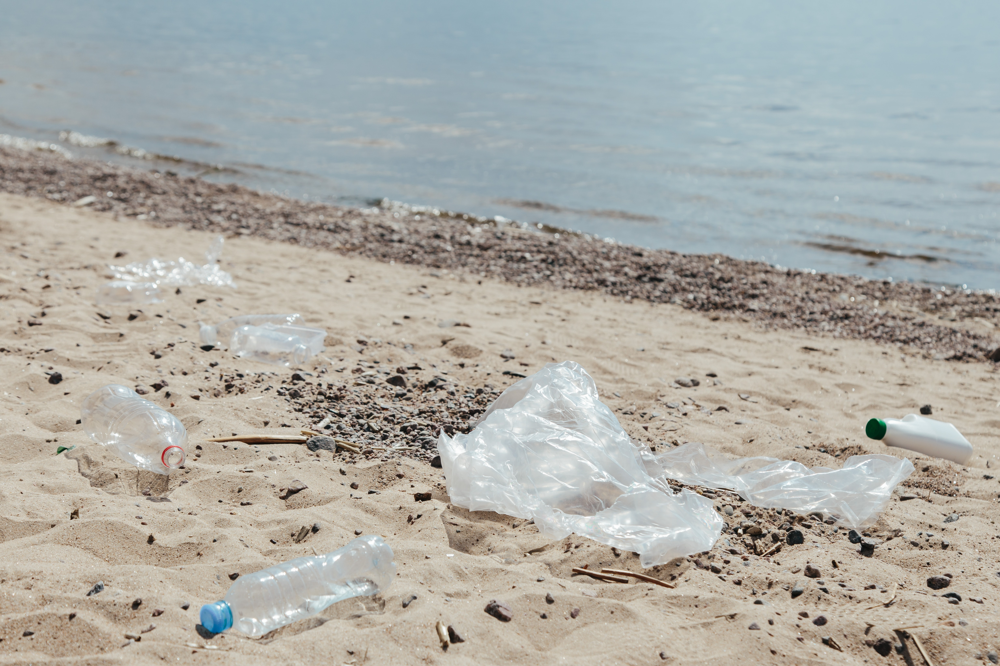
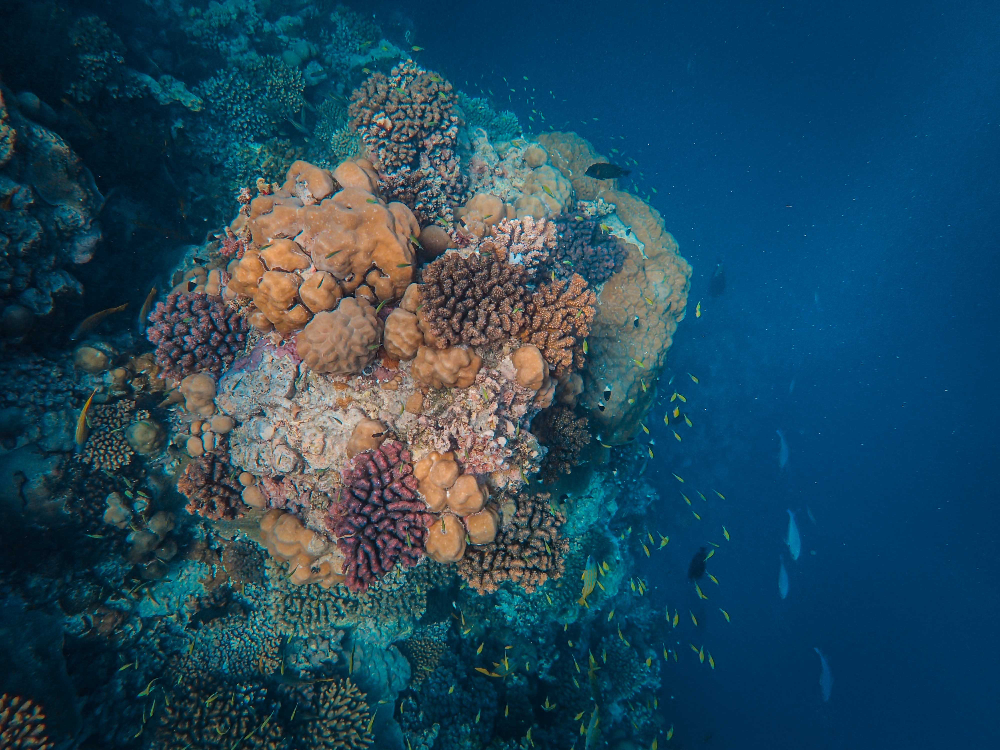
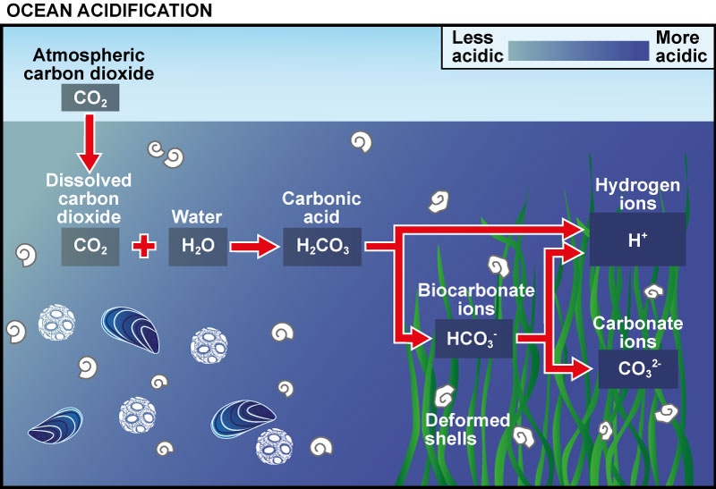

A sobrevivência da humanidade na Terra está diretamente ligada às condições de nossos oceanos e suas correntes de água, pois além de produzirem a metade do oxigênio disponível, eles ainda regulam as condições climáticas, absorvem grande quantidade de gás carbônico e fornecem alimentos a milhões de pessoas.
Saiba mais aqui!!Objetivo 14. Conservação e uso sustentável dos oceanos, dos mares e dos recursos marinhos para o desenvolvimento sustentável.

14.1 Até 2025, prevenir e reduzir significativamente a poluição marinha de todos os tipos, especialmente a advinda de atividades terrestres, incluindo detritos marinhos e a poluição por nutrientes.
14.2 Até 2020, gerir de forma sustentável e proteger os ecossistemas marinhos e costeiros para evitar impactos adversos significativos, inclusive por meio do reforço da sua capacidade de resiliência, e tomar medidas para a sua restauração, a fim de assegurar oceanos saudáveis e produtivos.
14.3 Minimizar e enfrentar os impactos da acidificação dos oceanos, inclusive por meio do reforço da cooperação científica em todos os níveis.
